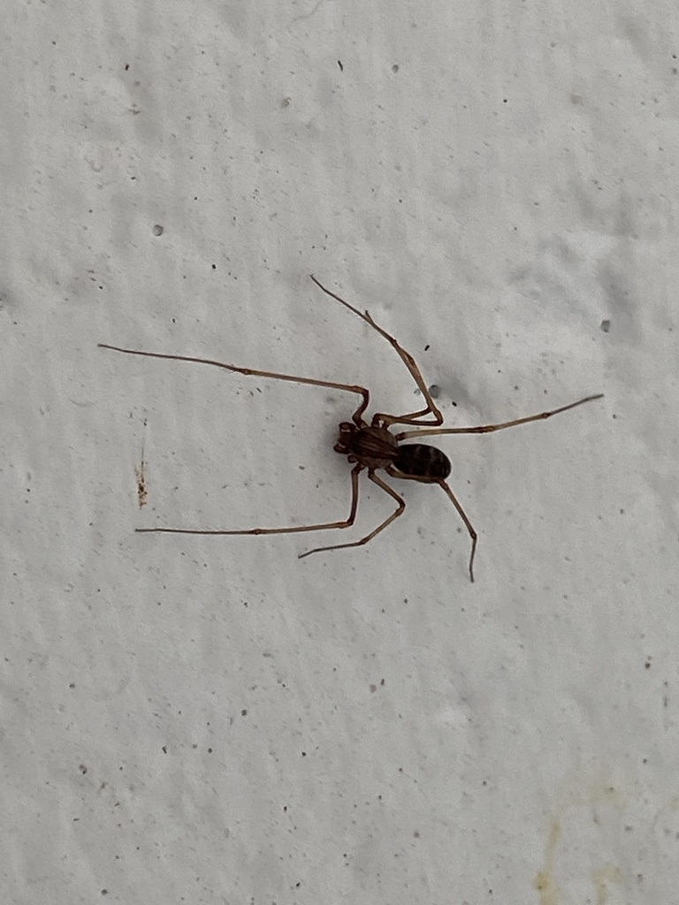

- This spider doesn't build a web to catch prey — it spits at it. The spit is a venom-laced liquid silk that congeals on contact, pinning the target in place in less than 35 milliseconds.
- The oversized, dome-shaped body isn't just for looks: that hump houses the enlarged venom glands that produce the sticky spit, taking up much of the spider's front half.
- Females carry their egg sac in their chelicerae — the jaw-like appendages at the front of the face — until the eggs hatch, then remain with the spiderlings through their first molts.
- A slow-motion survivor: while many common garden spiders race through life in under a year, spitting spiders are remarkably long-lived for their size, with females in the family Scytodidae documented reaching two to four years thanks to a low-energy, stealth-hunting lifestyle.
A small spider, roughly the size of a watermelon seed: females about ¼ inch body length, males slightly smaller. The most striking feature is the cephalothorax — the front body section — which is dramatically domed and rounded, giving the spider a humpbacked silhouette unlike almost any other spider you'll encounter in a Florida garden.
Overall brown to chestnut-brown, with dark irregular markings or spotting on the domed cephalothorax and alternating pale and dark transverse bands across the abdomen. Males tend to be somewhat lighter, with yellowish legs marked by dark violet patterning. The mottled pattern helps the spider blend into bark, leaf litter, and shadowed walls.
Six eyes arranged in three widely spaced pairs, forming a gentle arc across the face. Most Florida spiders have eight eyes, so the six-eyed arrangement — visible up close — is a useful confirmation. The eyes are relatively small; this spider relies more on vibration than vision to locate prey.
Long, slender, and delicate-looking, tapering toward the tips. At rest the legs are spread wide, giving the spider a span considerably larger than the body alone would suggest. The front legs, used to sense vibrations in the environment, are often held out ahead of the body.
Essentially silent. Like most spiders, Scytodes fusca produces no vocalizations. It detects prey and potential mates primarily through vibration sensed by sensory hairs on its legs.
Start with the silhouette: a small, pale-brown spider with an unmistakably domed, humpbacked front half and long thin legs spread wide. Up close, look for the dark mottled patterning on the cephalothorax and banded abdomen. Six eyes in three pairs, rather than the usual eight, confirm the ID. You are most likely to find this spider still and motionless on a wall, under a ledge, or tucked into a sheltered corner — it is a slow-moving, night-active hunter and tends to hold its position during daylight.
Small soft-bodied arthropods — insects such as mosquitoes, flies, and moths, as well as other spiders. Prey is immobilized by the venomous spit before the spider moves in to bite and feed. Scytodes spiders are araneophagic (spider-eating) as well as insectivorous, and have been documented preying on species larger or more venomous than themselves.
Check the underside of benches, the corners of covered pavilions, beneath overhanging eaves, and along shaded exterior walls — especially surfaces that have not been disturbed recently. At night, a flashlight scan of sheltered wall surfaces and garden structures is the most reliable method. Look for a small, motionless, humpbacked shape with long legs spread flat against the surface.
Active year-round in Manatee County given Florida's warm climate, but exclusively nocturnal. Daytime sightings are of resting spiders; genuine hunting activity happens after dark. No strong seasonal peak is expected, though activity may be somewhat reduced on the coldest winter nights.
Feel free to observe closely — this spider tolerates a slow, careful approach and is fascinating to watch at rest. Avoid touching or disturbing it, both for the spider's sake and because a startled spider may drop or run. No special precautions are needed.

- © Pammy63 (CC-BY-NC), via iNaturalist